Kanada
🇨🇦
Mein Land bei der WM 2026
So arbeitest du mit diesem Heft: Lies die Texte zu deinem Land. Unter jedem Absatz steht eine kleine Zeile mit Folien-Wörtern. Genau diese Wörter findest du später in der App wieder und tippst sie an, wenn du deine Folien baust.
Hier stehen die wichtigsten Daten zu deinem Land. In der App baust du daraus deinen eigenen Steckbrief.
| Hauptstadt | Ottawa |
| Kontinent | Nordamerika |
| Sprache | Englisch und Französisch (beide sind Amtssprachen) |
| Währung | Kanadischer Dollar |
| Einwohner | etwa 41 Millionen Menschen |
| Fläche | etwa 10 Millionen km², das zweitgrößte Land der Welt, fast 28 Mal so groß wie Deutschland |
| Großer Berg | der Mount Logan im Norden, über 5900 Meter hoch |
| Nachbarländer | Kanada grenzt nur an ein Land, die USA |
Kanada – Sachtext-Workbook · WM 2026 · Seite 1
In Kanada gibt es viele berühmte Orte. Diese vier solltest du kennen.
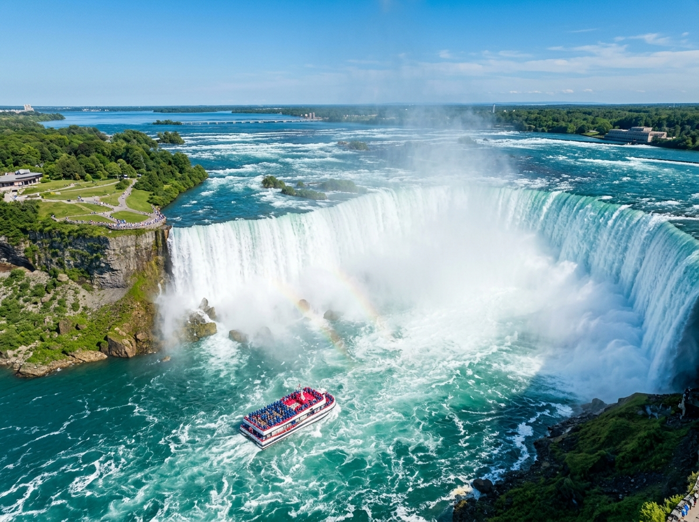
Niagara-FälleDie Niagara-Fälle sind riesige Wasserfälle an der Grenze zwischen Kanada und den USA. Hier stürzen gewaltige Wassermassen mit lautem Donnern in die Tiefe. Mit einem Boot kann man ganz nah heranfahren. Dabei wird man von der feinen Gischt richtig nass.
Grüne Wörter für die AppWasserfälleGrenze zur USAWassermassenlautes DonnernBoot
Rocky MountainsDie Rocky Mountains sind eine riesige Bergkette im Westen von Kanada. Dort gibt es hohe Berge, Gletscher aus Eis und Seen, die türkisblau leuchten. In den Wäldern leben viele wilde Tiere. Wanderer und Skifahrer kommen gern hierher.
Grüne Wörter für die AppBergketteGletschertürkisblaue Seenwilde TiereWälder
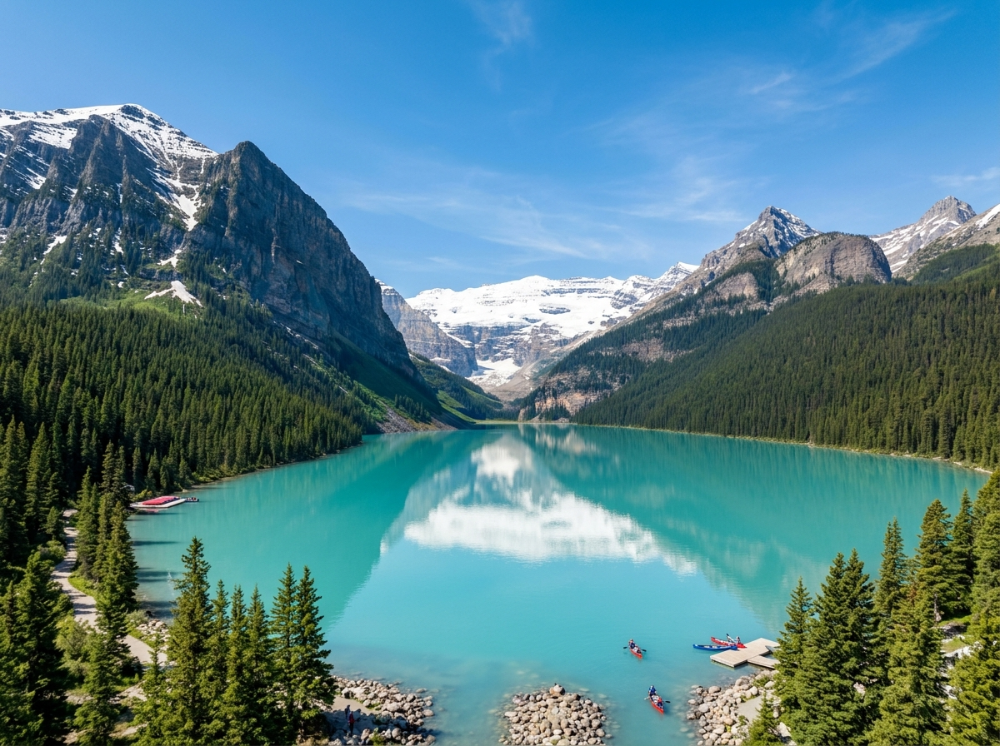
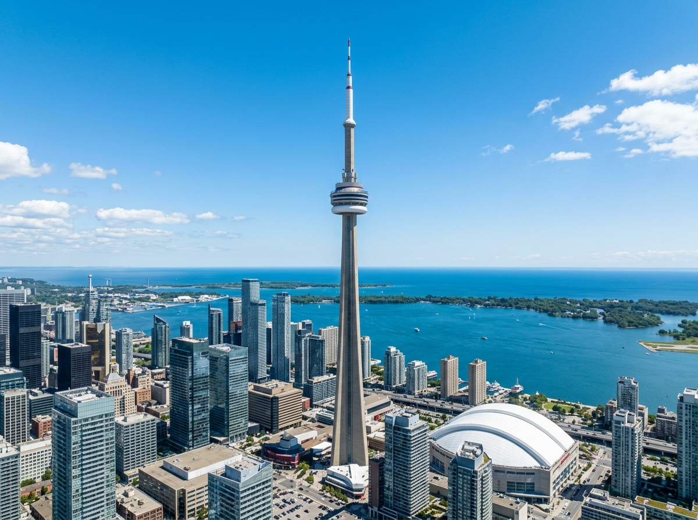
CN Tower in TorontoDer CN Tower steht in der großen Stadt Toronto und ist ein sehr hoher Fernsehturm. Ganz oben gibt es einen Boden aus Glas. Wer mutig ist, schaut durch das Glas tief nach unten. Von oben sieht man die ganze Stadt.
Grüne Wörter für die AppFernsehturmTorontosehr hochGlasbodennach unten schauen
NordlichterIm hohen Norden von Kanada leuchtet manchmal nachts der Himmel. Er strahlt dann in Grün, Violett und Rosa. Dieses Naturschauspiel nennt man Polarlicht. Viele Menschen reisen extra in den Norden, um es zu sehen.
Grüne Wörter für die AppHimmel leuchtetNordengrün und violettPolarlichtnachts
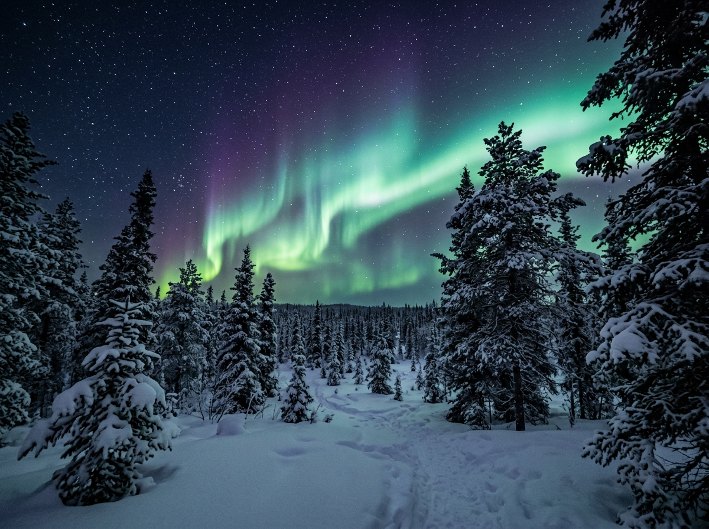
Kanada – Sachtext-Workbook · WM 2026 · Seite 2
In Kanada leben Tiere, die du bei uns nicht in der Natur findest.
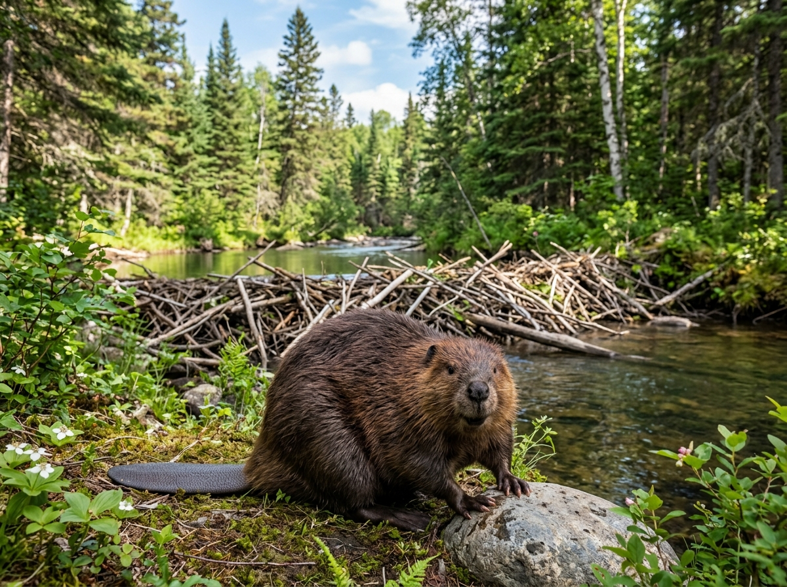
BiberDer Biber ist das Nationaltier von Kanada. Er lebt im Wasser und an Flüssen. Aus Ästen und Holz baut er große Dämme. So staut er das Wasser zu einem Teich auf. Mit seinen scharfen Zähnen kann er sogar Bäume fällen.
Grüne Wörter für die AppNationaltierbaut Dämmeaus Ästenscharfe Zähnefällt Bäume
ElchDer Elch ist das größte Tier der Hirschfamilie. Die Männchen tragen ein riesiges, breites Geweih. Er lebt in den großen Wäldern von Kanada. Mit seinen langen Beinen läuft er auch durch Sümpfe und tiefen Schnee.
Grüne Wörter für die Appgrößter Hirschbreites Geweihlange Beinelebt im Waldsehr groß
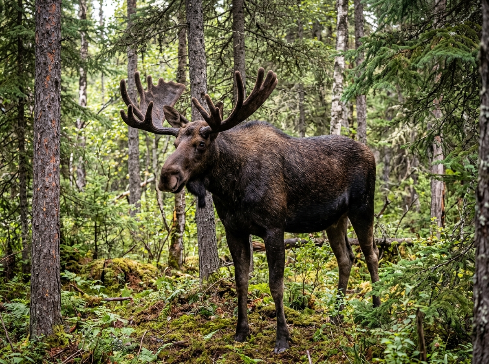
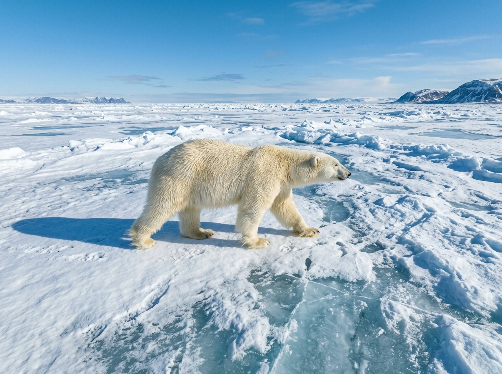
EisbärIm hohen Norden von Kanada leben Eisbären. Sie sind die größten Landraubtiere der Welt. Ihr dickes, weißes Fell hält sie auch bei großer Kälte warm. Am liebsten jagen sie auf dem Eis nach Robben.
Grüne Wörter für die Applebt im Nordengrößtes Raubtierweißes Felljagt Robbenauf dem Eis
Kanada – Sachtext-Workbook · WM 2026 · Seite 3
In der App kannst du beim Essen das Foto nehmen oder dein Gericht selbst malen.
AhornsirupKanada macht den meisten Ahornsirup der Welt. Der süße Saft kommt aus dem Stamm vom Ahornbaum. Im Frühling zapfen die Menschen den Saft aus den Bäumen. Danach kochen sie ihn zu Sirup ein. Über Pfannkuchen und Waffeln schmeckt er besonders gut.
Grüne Wörter für die Appsüßer SirupAhornbaumSaft zapfeneinkochenauf Pfannkuchen
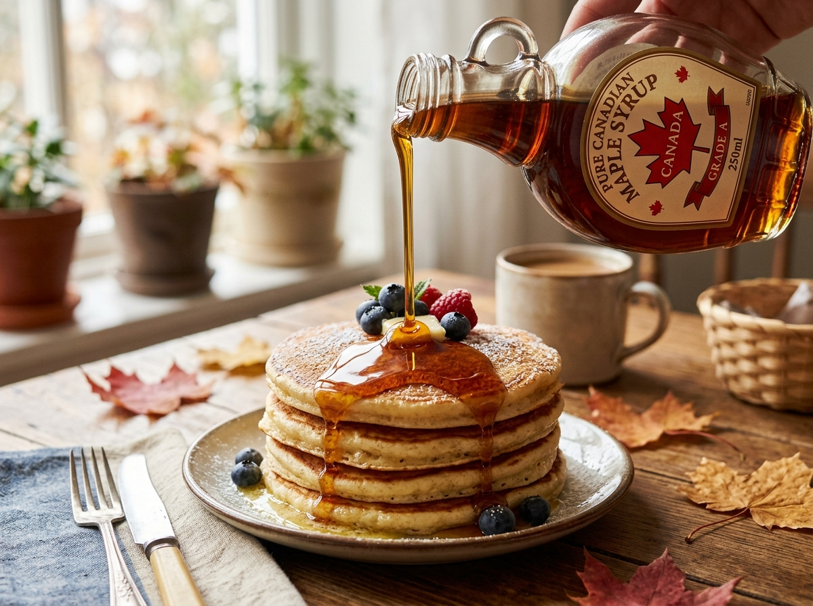
PoutinePoutine ist ein sehr beliebtes Gericht in Kanada. Es besteht aus Pommes frites mit Soße darüber. Obendrauf kommen kleine Klümpchen aus Käse. Das Ganze wird heiß serviert. Besonders gern isst man Poutine in der Provinz Québec.
Grüne Wörter für die AppPommes fritesSoßeKäseklümpchenheißaus Québec
BannockBannock ist ein einfaches, flaches Brot. Schon die First Nations, also die Ureinwohner von Kanada, kannten es. Man backt es aus wenigen Zutaten in der Pfanne oder über dem Feuer. Es ist schnell gemacht und macht satt.
Grüne Wörter für die Appflaches BrotFirst NationsUreinwohnerin der Pfanneüber dem Feuer
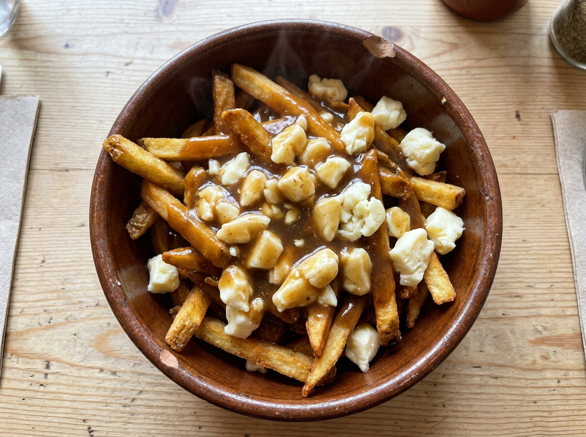
Kanada – Sachtext-Workbook · WM 2026 · Seite 4
★ Wahl-Thema: Fußball oder Kinderalltag (mindestens eins)
⚽ Gut zu wissen
Die Fußball-Nationalmannschaft von Kanada heißt Les Rouges, das bedeutet die Roten. Sie spielt in einem roten Trikot. Bei der WM 2026 ist Kanada Co-Gastgeber. Das Land richtet das große Turnier zusammen mit den USA und Mexiko aus. Darum spielt Kanada seine Gruppenspiele im eigenen Land, zum Beispiel in den Städten Toronto und Vancouver. Lange war Kanada nur selten bei einer WM dabei, doch das Team wird immer stärker.
Grüne Wörter für die Approtes TrikotLes RougesCo-Gastgeberspielt zu HauseToronto
🌟 Profi-Wissen
Der bekannteste Spieler ist Alphonso Davies. Er spielt beim FC Bayern München und ist blitzschnell. Als Kind kam er mit seiner Familie aus Sierra Leone als Flüchtling nach Kanada. 2026 ist Kanada zusammen mit den USA und Mexiko Gastgeber der Weltmeisterschaft.
Grüne Wörter für die AppAlphonso DaviesFC Bayern MünchenFlüchtlingskindCo-Gastgeber 2026erste WM seit 1986
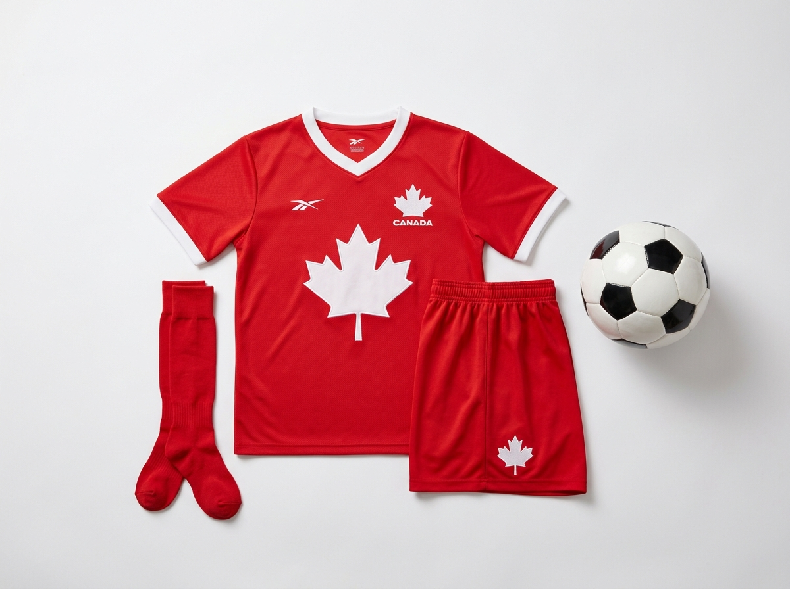
Kanada – Sachtext-Workbook · WM 2026 · Seite 5
★ Wahl-Thema: Fußball oder Kinderalltag (mindestens eins)
Schule in KanadaIn Kanada gehen die Kinder von Montag bis Freitag zur Schule, so wie bei uns. Viele fahren morgens mit einem gelben Schulbus zum Unterricht. Diese großen, gelben Busse sieht man in ganz Kanada. In der Schule wird meistens auf Englisch gesprochen, in manchen Gegenden aber auch auf Französisch. Die Sommerferien sind sehr lang und dauern fast zwei Monate.
Grüne Wörter für die Appgelber SchulbusEnglisch und FranzösischMontag bis Freitaglange Sommerferienfast zwei Monate
Winter und EishockeyIn Kanada ist der Winter sehr lang und sehr kalt. Es liegt oft viel Schnee. Viele Kinder spielen darum gern Eishockey, das ist der beliebteste Sport im Land. Sie laufen auf Schlittschuhen über gefrorene Seen oder über eine Eisbahn. Auch Schlittenfahren und Skifahren machen vielen Kindern Spaß.
Grüne Wörter für die Appkalter Winterviel SchneeEishockeySchlittschuhegefrorener See
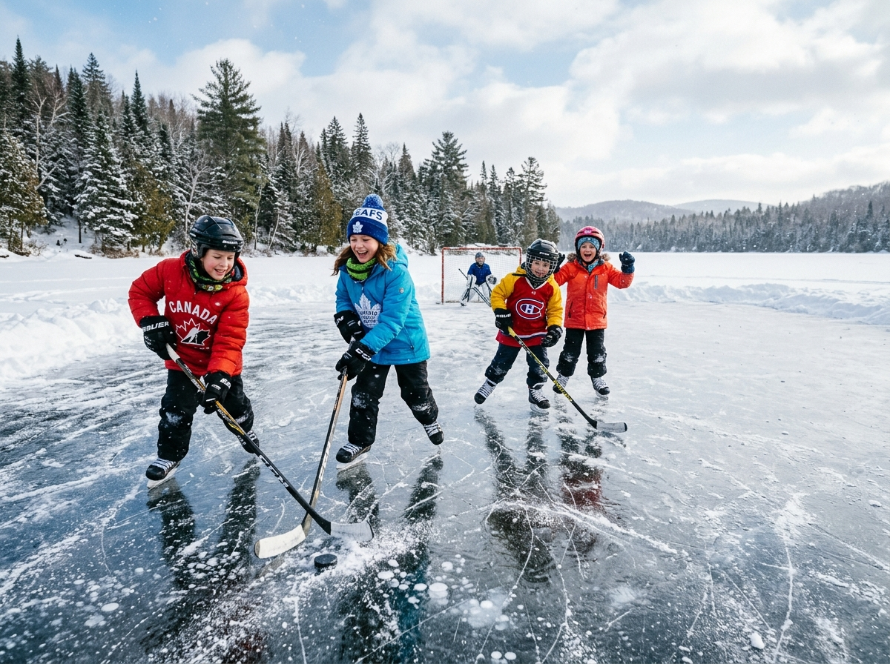
Kanada – Sachtext-Workbook · WM 2026 · Seite 6